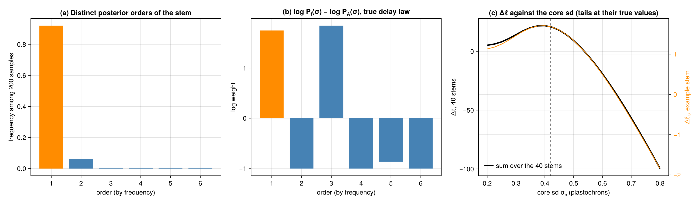

5. Commitment timing
Step 1 gives, for every stem, the exact posterior of its order and as many samples of it as we like (§3.7). Step 2 asks the question of §1.4: which delay law $f$ explains these orders? In four moves:
- the law of the order that a delay law predicts, $P_f(\sigma)$ (§5.2);
- why the exact sum of §3 cannot use it, and why this is a small obstacle (§5.3);
- the exact score of a single order (§5.4);
- the likelihood of $f$, by re-weighting the orders of step 1 (§5.5).
The delay law itself (§5.6) and its fit (§5.7) come last. But first, why should a delay be random at all?
5.1 Why a random delay
The switch. In each cell of the peripheral zone of the meristem, a regulatory network downstream of auxin signalling reads an input: the strength of auxin signalling in that cell. The input rises as auxin accumulates at the site, and is lowered near young primordia, which inhibit new ones around them. Commitment is the switch of the network to the organ-founder state, a switch that is not undone when the input falls back: a site has committed once removing auxin no longer prevents the organ from forming.
Why random. A switch made of a few molecules in a few cells is noisy, and so is the input it reads. Several mechanisms turn this noise into a random commitment delay: a bistable switch driven slowly through its threshold, a long cascade of steps, or a precise switch reading a jittery input. The package assumes none of them. It keeps only what §1.4 assumed: each site commits after a random delay, with the same law for every site. It fits a flexible law (§5.6) and lets the orders decide its shape; a law derived from a mechanism can be put in its place and compared with it (Custom delay laws; Deriving a law: the fold switch works through one example).
What the order sees. Only differences between delays change the order. The visible signs of an organ come later than its commitment, and some steps upstream of the switch take time, but the common part of these lags shifts every site alike and leaves the order unchanged (§5.2); their jitter adds to $f$.
5.2 The law of the order of a paced meristem
Recall the mechanism of §1.4: site $i$ is ready at time $i$ (in plastochrons), it commits at $\tau_i = i + e_i$ with independent delays $e_i \sim f$, and the order on the stem is the ranking of the $\tau_i$. Only differences of delays matter, so $f$ is defined up to a shift, and its core is centred at 0. This is Thurstone's law of comparative judgment (Thurstone, 1927), with commitment times as the noisy values.
Two sites first. Sites 1 and 2 are swapped when $2 + e_2 < 1 + e_1$, that is $e_1 - e_2 > 1$. With Gaussian delays of sd $\sigma_c$, the difference has sd $\sigma_c\sqrt 2$, and
\[P(2\,1) = \Phi\!\left(-\frac{1}{\sigma_c\sqrt 2}\right).\]
With $\sigma_c = 0.42$ plastochron, this is 4.6 %: about one pair of neighbours in twenty. But a displacement by two needs $e_i - e_{i+2} > 2$, of probability $\Phi(-2/(\sigma_c\sqrt 2)) \approx 4 \times 10^{-4}$, one pair in
- Real stems have many more (§5.6): a Gaussian alone is not the whole story.
Any number of sites. The organ at height $p$ comes from site $\sigma(p)$; call $t_p = \tau_{\sigma(p)}$ its commitment time, so its delay is $t_p - \sigma(p)$. $\sigma$ is the order on the stem exactly when $t_1 < t_2 < \dots < t_n$:
\[P_f(\sigma) = \int_{t_1 < t_2 < \dots < t_n} \prod_{p=1}^{n} f\big(t_p - \sigma(p)\big)\, dt_1 \cdots dt_n .\]
What the delay covers. If the readiness of site $i$ wanders to $i + u_i$ and the site commits $c_i$ later, then $\tau_i = i + (u_i + c_i)$: the same model with $e_i = u_i + c_i$, as long as the $u_i$ are independent. So $f$ is the total timing noise around a regular clock; the orders cannot split it between readiness and commitment (§7). What the model does not cover are timing errors that build on each other: a clock whose intervals vary, so that its errors add up like a random walk, or a late site that also delays the next ones. Both make the delays of neighbouring sites dependent (§7 lists the signs); §6.8 shows when a drifting clock starts to be read as tails.
A clock in plastochrons, not in hours. The clock is regular by construction: time is counted in plastochrons, one per site. The plastochron in hours may change along the stem, as the flower counts show (Step 5); counting in plastochrons absorbs the change, as long as it is slow over the one or two plastochrons that a delay spans. What it does not absorb is the delay: $f$ is the same law in plastochrons all along the stem only if the delays scale with the plastochron. A delay fixed in hours, under a plastochron that shortens along the stem, becomes longer in plastochrons towards the top, and a law fitted to the whole stem mixes these scales, which reads as heavier tails (§7).
5.3 Not a product, but close to one
The integral has one factor per organ, as in the product form of §3.1, but the chain $t_1 < \dots < t_n$ ties them together. Can a product $\prod_p h_{p,\sigma(p)}$ still reproduce $P_f$? A simple test says no.
The test. In a product form, a swap has a fixed price: swapping the organs at heights 1 and 2 multiplies the probability by the same factor, $e^{\eta_{+1} + \eta_{-1}}$, whatever happens at heights 3 and 4:
\[\frac{P(2\,1\,3\,4)}{P(1\,2\,3\,4)} = \frac{P(2\,1\,4\,3)}{P(1\,2\,4\,3)} .\]
Under $P_f$, with Gaussian delays of sd 0.42, the four orders have exact probabilities (by the recursion of §5.4; code in the box below):
| order | 1 2 3 4 | 2 1 3 4 | 1 2 4 3 | 2 1 4 3 |
|---|---|---|---|---|
| $P_f(\sigma)$ | 0.8635 | 0.0439 | 0.0439 | 0.00214 |
The odds of the first swap are $0.0439 / 0.8635 = 0.0508$ when heights 3–4 are in order, but $0.00214 / 0.0439 = 0.0487$ when they are swapped: 4 % lower. No product form can do this. The coupling comes from the boundary between the pairs: the organs at heights 2 and 3 must commit in order, and which sites they hold depends on both swaps. The sign is not fixed: with the tailed law of the running example (home page), the two odds are 0.0913 and 0.0941, 3.1 % higher.
Reproducing the numbers
using PhyllotaxisFold
P(σ, f) = exp(loglik_order_exact(σ, f)) # exact probability of an order under f (§5.4)
odds(f) = (P([2, 1, 3, 4], f) / P([1, 2, 3, 4], f), P([2, 1, 4, 3], f) / P([1, 2, 4, 3], f))
gauss = GaussianExpTails(0.42) # Gaussian delays, sd 0.42 plastochron
ex = GaussianExpTails(0.42; πL = 0.06, mL = 1.5, πE = 0.06, mE = 1.0) # the law of the running example
P([2, 1], gauss) # 0.046 (§5.2)
odds(gauss) # (0.0508, 0.0487)
odds(ex) # (0.0913, 0.0941)
# the orders 3 1 2 and 2 3 1 (§5.6): 0.0003 under gauss, 0.024 under ex
P([3, 1, 2], gauss) + P([2, 3, 1], gauss), P([3, 1, 2], ex) + P([2, 3, 1], ex)So $P_f$ is outside the family for which the sum of §3 is exact, and $p(y \mid f) = \sum_\sigma P_f(\sigma)\, p(y \mid \sigma)$ cannot be computed that way. But the deviation is a few percent: a product-form law, such as the propensity model fitted to the same stems, comes close to $P_f$. The next two sections exploit this.
5.4 The exact probability of one order
$P_f$ cannot be summed over all orders, but for one order it can be computed exactly. As in §3, go up the stem one height at a time and carry only what the next height needs: here, a single function of time.
For any delay density $f$, let $A_p(t) = P(t_1 < \dots < t_p < t)$: the probability that the organs at heights 1 to $p$ commit in the order $\sigma$, all before $t$. Then
\[A_0(t) = 1,\qquad A_p(t) = \int_{-\infty}^{t} f\big(u - \sigma(p)\big)\, A_{p-1}(u)\, du,\qquad P_f(\sigma) = A_n(+\infty) .\]
In words: the organ at height $p$ commits at $u$ with density $f(u - \sigma(p))$, and the organs below it must have committed in order before $u$, with probability $A_{p-1}(u)$. For two sites in order, this gives $P(1\,2) = \int f(u - 2)\, F(u - 1)\, du$, with $F$ the cumulative of $f$: the probability that site 1 commits before site 2. The recursion uses nothing of the shape of $f$, so any law that defines its density can be scored (Custom delay laws).
Derivation
In the $n$-fold integral of §5.2, integrate $t_1$, then $t_2$, and so on. The variable $t_1$ appears only in $f(t_1 - \sigma(1))$ and in $t_1 < t_2$; integrating it out gives $A_1(t_2)$. Then $t_2$ appears only in $f(t_2 - \sigma(2))\, A_1(t_2)$ and in $t_2 < t_3$, which gives $A_2(t_3)$, and so on up to $A_n(+\infty)$. ∎
Why a grid. For a general $f$, each step has no closed form and $A_p$ is a whole function of time. So the recursion runs on a grid: $A_p$ becomes a vector, and each step a product with the shifted density followed by a running sum, one pass per organ. The law itself enters only through its values on a grid of delays, delay_grid(f) (by default DELAY_GRID, −30 to 30 plastochrons in steps of 0.05), where it is renormalised: a law can be given up to a constant, and the same values serve the overtaking profile and the tail masses. The price is that $P_f(\sigma)$ is exact only up to the discretisation, which asks three things of the grid.
Numerics, and what they ask of the delay law
At each height, $A_p$ is renormalised, and the logs of the normalisers add up to $\log P_f(\sigma)$. Grid cells where $f$ is more than $e^{18}$ below its peak are skipped.
1. The law fits on the grid. Renormalising hands the mass cut off at the edges back to every site, so a law cut off by the grid scores better than it should, by about $n$ times the lost mass per stem. fit_delay_law warns when an edge cell of the grid holds more than $10^{-6}$ of the mass (for the default law, when a tail loses more than $10^{-4}$).
2. The step resolves the law. The cell that contains $t$ counts for one half in $A_p$ (midpoint rule): counting it in full would treat two times in the same cell as ordered, a bias of first order in the step instead of second. The error is set by the step relative to the narrowest feature of $f$: a core only a few steps wide needs a finer grid.
3. The step divides a plastochron (0.05, 0.1, 0.25, …), so that the shift of $f$ from one site to the next falls on the grid; otherwise $f$ is interpolated linearly, which adds an error of its own.
Step 1 provides exactly the orders worth scoring: the posterior samples of each stem. How do their scores become the likelihood of $f$?
5.5 Re-weighting the reconstructed orders
The propensity model $A$ and the delay law $f$ describe the angles in the same way (§2.5) and differ only in the law of the order. So write the likelihood of $f$ as a sum over orders, and let Bayes' rule under $A$ turn the angle term into the posterior of step 1.
For one stem,
\[\frac{p(y \mid f)}{p(y \mid A)} = \sum_\sigma p(\sigma \mid y, A)\, \frac{P_f(\sigma)}{P_A(\sigma)} = \mathbb E_{\sigma \sim p(\sigma \mid y, A)}\Big[ \frac{P_f(\sigma)}{P_A(\sigma)} \Big] .\]
Derivation
$p(y \mid f) = \sum_\sigma p(y \mid \sigma)\, P_f(\sigma)$, and under $A$, Bayes' rule gives $p(y \mid \sigma) = p(\sigma \mid y, A)\, p(y \mid A) / P_A(\sigma)$. Substitute and divide by $p(y \mid A)$. ∎ The identity requires $P_A(\sigma) > 0$ wherever $P_f(\sigma)\,p(y \mid \sigma) > 0$. Orders outside the band of $A$ violate this; see the limits below.
This is the intuition of §1.5, made exact: a good delay law gives a high probability to the orders the angles support. Dividing by $P_A(\sigma)$ (the product form of §4 over its permanent) removes the part of that support that came from $A$'s own law of the order, so that it is not counted twice.
In practice. The expectation is an average over the posterior samples of the stem. With $\sigma_1, \dots, \sigma_M$ the distinct sampled orders and $w_j$ their frequencies,
\[\Delta\ell_s(f) = \log \sum_{j} w_j\, \frac{P_f(\sigma_j)}{P_A(\sigma_j)},\qquad \Delta\ell(f) = \sum_{\text{stems}} \Delta\ell_s(f) = \log p(y \mid f) - \log p(y \mid A) .\]
$\Delta\ell > 0$ means that the timing law explains the angles better than the free costs of the propensity model. Two delay laws are compared by the difference of their $\Delta\ell$, in which $A$ cancels. Scoring a new law recomputes neither the angles nor the permanents.

Figure 2. The example stem; its true order is in orange. (a) Its distinct posterior orders and their frequencies among 200 samples. (b) The log-weight $\log P_f(\sigma) - \log P_A(\sigma)$ of each order under the true delay law (a ratio of two probabilities, not the probability of the order). (c) $\Delta\ell$ against the core sd $\sigma_c$, tails at their true values: summed over the 40 stems (black) and for the example stem (orange, right axis). Dashed: the true $\sigma_c$.
On the example stem (figure 2), the true order carries 90 % of the posterior samples (a). The true delay law finds it about six times more probable than the propensity model does (log-weight +1.8), and most alternatives less probable (b): $\Delta\ell_s > 0$. A high weight does not mean a probable order: order 4 has a log-weight as high as the true order's, yet $f$ finds it 16 times less probable; $A$ simply finds it even less probable. With 0.5 % of the samples, it adds only 0.03 to the sum, against 5.3 for the true order. Summed over the stems, $\Delta\ell$ peaks close to the true core sd (c).
When can the average be trusted? When the weights $r_j = P_f(\sigma_j)/P_A(\sigma_j)$ are of similar size. The effective sample size over the $N$ draws, $(\sum r)^2 / \sum r^2$, measures this: $N$ when all weights are equal, 1 when a single draw carries everything. The weights are even when $P_A$ is close to $P_f$, as §5.3 leads us to expect; in the validation the effective sample size is typically 175–200 out of 200 (§6.7).
Limits. The angle nuisances ($\kappa$, spiral, twist) are those of the propensity model's fit. Orders outside its band ($|d| > k$) are never sampled, so a law that puts mass on them is slightly penalised. A stem whose effective sample size is small is scored imprecisely; more posterior samples help.
5.6 The delay law
assumption — the delay is a precise Gaussian core, plus two exponential tails for sites committed late or early (the package's default law, GaussianExpTails):
\[f = (1 - \pi_L - \pi_E)\, \mathcal N(0, \sigma_c^2) + \pi_L\, \big(\mathcal N(0, \sigma_c^2) \ast \mathrm{Exp}(m_L)\big) + \pi_E\, \big(\mathcal N(0, \sigma_c^2) \ast (-\mathrm{Exp}(m_E))\big).\]
The core sd $\sigma_c$ is the precision of a typical commitment. A fraction $\pi_L$ of the sites is late by an extra exponential delay of mean $m_L$, and a fraction $\pi_E$ early by $m_E$. The tails give what a Gaussian cannot (§5.2): one organ displaced by two or three positions while its neighbours stay in order. For three sites, the orders 3 1 2 and 2 3 1 have a probability of 0.03 % under the Gaussian core alone, and 2.4 % under the law of the running example, whose tails hold 12 % of the sites.
The variants are named by the tails they fit: :core ($\sigma_c$), :late ($\sigma_c, \pi_L, m_L$), :early ($\sigma_c, \pi_E, m_E$) and :both (all five); GaussianExpTails(:late) is the starting law of the :late fit. Comparing the $\Delta\ell$ of the nested :core, :late, :both tells whether the orders call for tails, and on which side. This law is a default, not a requirement: Custom delay laws shows how to define another and why this one is the default.
The density
A Gaussian of sd $\sigma_c$ convolved with an exponential of rate $\lambda = 1/m$ (an exponentially modified Gaussian) has the density $\lambda \exp\!\big(\lambda(\lambda \sigma_c^2/2 - x)\big)\, \Phi\big((x - \lambda \sigma_c^2)/\sigma_c\big)$, with $x = z$ for the late tail and $x = -z$ for the early one. The mixture is evaluated in log space on the delay grid and renormalised there (§5.4).
What the orders can identify. The orders do not see the delay of a site, only whom it overtakes. What they identify is not the five parameters of $f$ but the overtaking profile:
\[q_d = P(\text{site } i + d \text{ commits before site } i) = P(e_i - e_{i+d} > d), \qquad d = 1, 2, 3, \dots\]
- The profile is read directly off the stems. With independent delays, whether sites $i$ and $i + d$ are inverted depends only on their own two delays, so the fraction of inverted pairs $d$ apart estimates $q_d$. Every delay law that predicts the same orders has the same profile. $q_1$ is the rate of neighbour swaps; $q_2$ and $q_3$ are the longer displacements, where tails show.
- It has no direction. $q_d$ depends on $f$ only through the law of a difference of two delays, the same whether the off-time sites are late or early. The late/early split rests on rarer patterns of three organs (2 3 1 against 3 1 2), and is only weakly identified.
- The parameters of $f$ are readings of its shape. The core sd, the tails and the off-time fraction $P(|e| > 1)$ (
tail_masses) follow from the profile through the assumed shape. When the shape is clear-cut, they are well determined (for light tails, the core and the off-time fraction are recovered). When it is not, they can drift while the orders stay the same: without tails, a short "tail" holding most of the sites just reshapes the core; with heavy tails, a narrower core plus more tail mass predicts the same orders, and the core collapses.
So the profile is the result to report and to compare between groups (overtaking_profile reads it from the posterior orders, with no delay law; delay_law_inference gives that of the fitted law). The fitted law interprets it, within its assumed shape: how precise a typical commitment is, and how many sites are off time. §6.5 measures each of these statements on simulated stems.
5.7 Fit, uncertainty and comparisons
- Fit.
fit_delay_law(samples, f)maximises $\Delta\ell$ by Newton's method with a trust region, starting from the law $f$, on the unconstrained free parameters that $f$ declares (Custom delay laws). For the default law, $f$ is a variant such asGaussianExpTails(:both), orGaussianExpTails(:both, g)to start from the values of a law $g$. Its free parameters for:bothare $\log \sigma_c$, $\operatorname{logit}(\pi_L + \pi_E)$, the logit of the late share $\pi_L/(\pi_L + \pi_E)$, $\log m_L$ and $\log m_E$: the tail mass and the late share are separate because the first is better determined. On a fixed grid, $\Delta\ell$ is smooth, and its gradient and Hessian are exact: dual numbers pass through the density and the recursion of §5.4. - Robust standard errors. The stem is the unit of replication, and stems may differ more than one shared law says. So
delay_law_inferencetakes the uncertainty from the spread of the per-stem slopes $g_s$ of the terms $\Delta\ell_s$, not from the curvature $H$ of their sum alone: the sandwich covariance $H^{-1}\big(\sum_s g_s g_s^\top\big)H^{-1}$. The delta method then gives the standard errors of $\sigma_c$, of the tail masses and of the profile $q_1, \dots, q_4$ (overtaking). - The profile without a delay law.
overtaking_profile(samples)averages, over each stem's posterior samples, the fraction of pairs $d$ apart that are inverted, and pools the stems, with standard errors clustered by stem. It is also a check of the fitted law: the two profiles should agree. - Two groups (a mutant and its co-segregant wild type).
compare_profiles(a, b)gives the differences of $q_d$ by lag, with standard errors and a Wald test over $q_1, q_2, q_3$; the profiles can come fromovertaking_profileor from each group's fitted law. Separate laws are compared with one shared law by the difference of their summed $\Delta\ell$ (a likelihood ratio); the terms of $A$ cancel, each stem's term being relative to its own group's fit of $A$. - A shared core. A group with heavy tails has no identified core sd of its own (§5.6). To still read its off-time fraction, fit the groups with one core sd and their own tails:
fit_delay_law([smp_wt, smp_mutant], GaussianExpTails(:both)). This states a hypothesis, the mutant changes the off-time organs, not the precision of a typical commitment, with the light-tailed group carrying the core.shared_core_testtests it by the likelihood ratio of one core against one per group (χ² with one degree of freedom per extra group; with heavy tails, permuting the group labels among the stems calibrates it).delay_law_inferenceon the joint fit gives each group's off-time fraction and their difference. Check that the shared core stays close to the light-tailed group's own; if it collapses, report the separate fits instead (§6.6). - Delays in hours. The delays are in plastochrons. The
Plastochronmodule estimates the plastochron at each flower rank from daily counts of open flowers (box below), and converts a delay to hours with the mean plastochron of the measured organs (mean_plastochron,in_hours; worked analysis, step 5).
The flowering model
assumption — flowers open at the pace at which they were initiated, so that the rate of opening is the inverse of the plastochron. Plant $i$ opens flowers at a piecewise-linear rate (per day), with $t$ in days:
\[\lambda_i(t) = \begin{cases} b + a t & t \le \tau_i \\ \rho_i - d\,(t - \tau_i) & \tau_i < t \le A_i \\ 0 & t > A_i \end{cases} \qquad \rho_i = b + a\tau_i,\quad A_i = \tau_i + \rho_i / d ,\]
a rise, then a decline from a change point $\tau_i$ until the meristem arrests at $A_i$. The change points vary between plants, $\log\tau_i \sim \mathcal N(\mu_\tau, \sigma_\tau^2)$, and are integrated out. The new flowers of a day are Poisson with mean $\int\lambda_i$ over that day (over the whole gap after days without record), and the five parameters are fitted by maximum likelihood (fit_flowering).
Flower $k$ opens when the cumulative $F_i(t) = \int_0^t \lambda_i$ reaches $k - \tfrac12$, and its plastochron is $T_P(k) = 1/\lambda_i(t_k)$. Since $\lambda_i$ is linear on each phase, $\lambda_i^2$ is linear in $F_i$ ($b^2 + 2aF$ while rising), which gives $T_P(k)$ in closed form (plastochron_by_rank). A delay $x$ in plastochrons is $x\,\bar T$ in hours, with $\bar T$ the mean of $T_P$ over the ranks of the measured organs; the standard error of $\bar T$ is the delta method through the covariance of the fit, and that of $x\,\bar T$ combines both, as independent: $\sqrt{(\bar T\,\mathrm{se}_x)^2 + (x\,\mathrm{se}_{\bar T})^2}$.
Code. GaussianExpTails(σc; πL, mL, πE, mE), GaussianExpTails(variant), any DelayLaw (delay_logpdf, free_parameters, with_free_parameters, reported_parameters, nshared_parameters, delay_grid), rand([rng,] f), delay_logdensity(f), tail_masses(f; a = 1); loglik_order_exact(σ, f) (or (σ, logg, grid, γ)); order_samples(order_posterior(fit; nsamples), fit.θ.η), stem_terms(samples, f), relative_loglik(samples, f) (stem_terms(samples, logP) scores any law of the order given as $\sigma \mapsto \log P(\sigma)$); fit_delay_law, delay_law_inference, shared_core_test; the profile: overtaking(f), overtaking_profile(samples), compare_profiles(a, b); simulate_stems(f::DelayLaw; ...); flowering_rate, fit_flowering, plastochron_by_rank, plant_plastochron, relative_plastochron, mean_plastochron, in_hours.